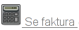
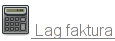
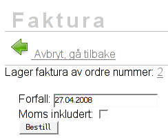

 En ordre kan kun ha en faktura. Du ser om ordren har en faktura i verktøylinja. Ikonet for fakura har da teksten "Se faktura". Dersom ingen faktura er lagd ennå, står det "Lag faktrua".
 Finn fram ordren du vil lage faktura av og trykk på "Lag faktura" i verktøylinja. For å finne ordren, søk opp kunden og gå til kundens side. Der vil du se en oversikt over alle ordre denne kunden har. Klikk på ønsket ordre og så på "Lag faktura".
 Forfall er satt til 15 dager fra dagens dato. Dersom du vil sette en annen forfallsdato kan du gjøre dette her.
Du vil da få fram denne dialogen. Du kan velge om fakturaen skal lages utifra om varene i ordren er med eller uten moms. Normalt behøver du ikke å gjøre noe da faktura normalt lages av varer hvor ingen moms er inkludert.